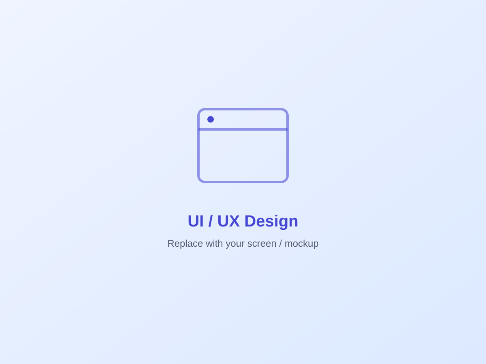
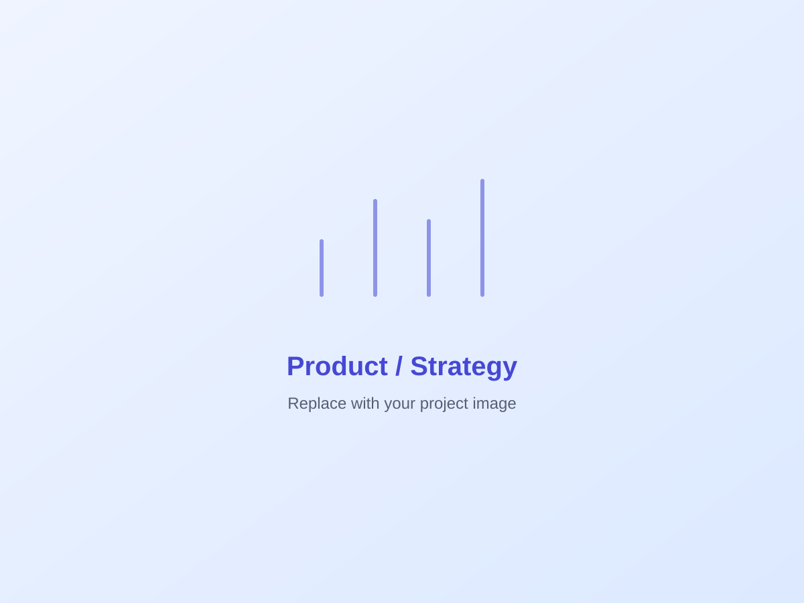

Redesigning a Field Service Platform for Speed
A complex internal operations tool was slowing teams down. I led the redesign from research to launch — turning a cluttered, multi-step workflow into a clear, task-first product.

The Challenge
Users spent too long on routine tasks because the interface buried key actions and used inconsistent language across teams. (Replace with your project's real problem.)
Hard to find anything
Search was literal and unforgiving, so common records were effectively invisible.
Inconsistent language
Each team named the same things differently, breaking cross-functional handoffs.
Too much at once
Every action and field showed at all times, overwhelming people who needed to do just one thing. There was no progressive disclosure.

Research & Insights
I sat with power users and watched how the daily work really happened — not how the manual said it should.
The workaround
People kept private spreadsheets to avoid the slow system — a clear signal the core flow had failed them.
Mental-model mismatch
The system sorted by upload date; users thought in terms of job and status. The structure needed to flip.
The hidden tax
Most users jumped to a second tool just to finish a task — an obvious opportunity for inline actions.
Wireframes & Iteration
I tested low-fidelity concepts before committing to visuals. The breakthrough was moving from a folder tree to a search-first "command center".
From structure to search
Early sidebars forced a slow, linear path. We replaced them with semantic search plus contextual filter chips.
- check_circleCut visual noise step by step.
- check_circleAdded a floating "quick actions" menu.
- check_circleRefined the drag-and-drop zone.
A fast, task-first workspace
A clean, search-led interface with inline actions removed the need to switch tools — and made the common path the fast path.